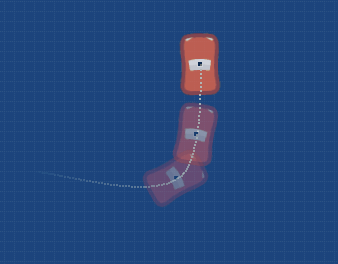

Recorridos
Los recorridos nos permite realizar movimientos de actores de manera muy simple, lo que tenemos que hacer es enumerar todos los puntos "x" e "y" que queremos recorrer y llamar a una sola función.
Usando la función hacer_recorrido
Por ejemplo, imagina que tenemos un enemigo de juego de naves, un ovni con un alien, y queremos que se mueva por la pantalla de izquierda a derecha.
Primero tenemos que tener en cuenta qué puntos de la pantalla
queremos que recorra. Por ejemplo, que primero visite la posición
(x= -200, y=0), luego hacia abajo a la posición (x=0, y=-100),
luego a la derecha (x=200, y=0) y por último que regrese al punto
de origen (x=0, y=0):

Y por último, tenemos que llamar a la función hacer_recorrido de
esta forma dentro de una actor:
this.hacer_recorrido([-200, 0, 0, -100, 200, 0, 0, 0], 7, 1, false);
El primer parámetro tiene que ser una lista con todas las coordenadas
que queremos que recorra. Tenemos que ingresar el número de la coordenada
x, luego en de la coordenada y y seguir así. Esta lista tiene que tener
la forma [x_punto_1, y_punto_1, x_punto_2, y_punto_2 ....]
El segundo argumento, que en este ejemplo es 7, tiene que ser un número
indicando cuantos segundos tiene que durar el movimiento. En este caso
se pide que el movimiento dure 7 segundos.
El ante último argumento es el número que indicará las repeticiones de esta
animación, si le pasamos 0 el movimiento se va a repetir constantemente.
Y el último argumento indica si el actor deber rotar en dirección al camino
o no. Es útil poner este argumento en true cuando el actor es una nave vista
desde arriba o un automóvil:

Ten en cuenta que el actor va a visitar todos los puntos pero de manera gradual, siguiendo el recorrido pero realizando una curva de movimiento muy suave: